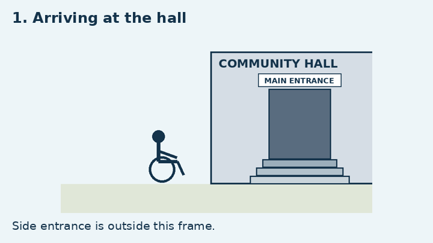
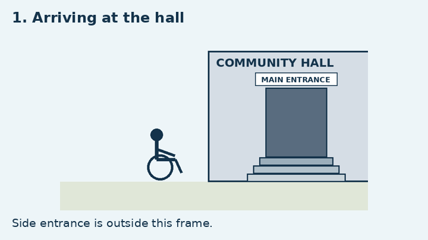
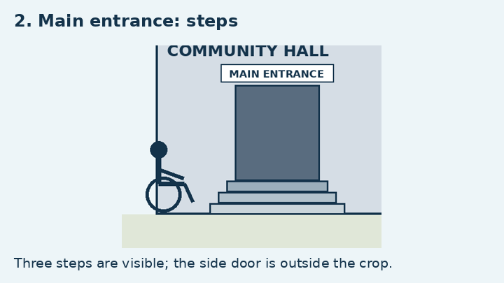
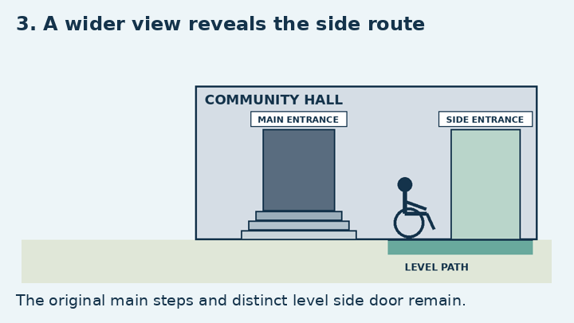

Learning goals
We are learning to evaluate how framing, light, sequence and image treatment shape a representation of a person, group or place.
- Describe a visible feature before interpreting it.
- Explain what the image includes and leaves out.
- Compare a different crop, sequence or treatment.
- Judge the choice against a stated purpose, with a limitation.
Before this lesson
A close-up selects detail; a wide shot shows more of the surroundings. A crop removes part of an existing image. Salience means what attracts attention. Distinguish what you can see from what you infer about a person’s thoughts or motives.
Key concept and three teaching focuses
Three teaching focuses
- Still images: framing, angle, gaze and salience select what a viewer notices. A photograph or illustration is a representation, not a complete neutral record.
- Moving images: the order, duration and change of shots can reveal information gradually or withhold it. A sequence can encourage an inference that a later frame qualifies.
- Treatment and purpose: lighting, contrast and abstraction can suggest different readings of the same subject. Evaluate the choice for a particular audience and task, not by a universal colour code.
Use: visible detail → represented idea → plausible effect → evaluation for the stated purpose. You do not need technical camera settings or to infer sound from a silent sequence.
Worked examples with complete evidence
Worked example 1: same event, different frame
Purpose: a school newsletter wants to explain students’ collective contribution to a local clean-up. Compare these original schematic illustrations. A is a crop of B; the action has not changed.
- A foregrounds one person’s recycling action. The event sign and other volunteers are outside its frame.
- B supplies the event label, two other volunteers and a collection bag. These details represent an organised group effort.
- For explaining collective contribution, B gives more relevant context. A could be more useful for a short instruction about where to put a bottle.
Model answer: B better supports the newsletter’s purpose because its wide frame includes the community-event sign and several participants. A makes individual action salient, but cannot by itself show that this is an organised clean-up. Neither picture establishes how often the students volunteer or what they feel.
Worked example 2: an ending changes an earlier interpretation
Play the optional animation; close this section to hide it

Purpose: a short film should explain both an access barrier and an available route. View the sequence, or open the still-frame alternative below. No sound is included.
Still frames and timing: read without watching the animation



- Frame 1 establishes a student arriving for a public event. Frame 2 selects the steps at the main door.
- If the edit ends after frame 2, a viewer might infer that entry is unavailable. The frame does not show every entrance.
- Frame 3 reveals a level side entrance. It changes the information available and qualifies the earlier inference.
- For this purpose, the full sequence is more informative. It still does not establish that every part of the building or event is accessible.
Evaluation: the delayed reveal can make an audience notice the initial barrier before showing the alternative route. It should not be used to imply that the student personally failed, or that one ramp removes every barrier.
Questions and answers
- Does a close-up show more truth? It shows more detail about a smaller selection. It can omit decisive context.
- Does a high angle always make someone weak? No. Explain the visible scale, relationship and situation; several readings may be defensible.
- Can an edit establish a cause? Shot order can suggest a connection, but adjacent shots do not by themselves prove a causal relationship.
- How is evaluation different from naming? “Wide shot” identifies a feature; explaining why that view is better for a stated task evaluates its effect.
Common mistakes and quick fixes
- Darkness proves a person is dishonest. Lighting can suggest concealment; it does not establish character or guilt.
- A picture must show the whole event. Explain what the frame excludes and what evidence would be needed.
- Every viewer reacts identically. Use qualified language and justify the interpretation.
- A storyboard is a filmed event. This lesson’s animation is a constructed schematic sequence, not documentary footage.
Guided practice
A poster asks viewers to consider how a fictional mayor is represented. Here is the complete original visual: one portrait uses a face divided evenly between light and shade, without any other evidence of wrongdoing.
Try: explain a plausible suggestion of duplicity, identify the details supporting it and state a limit.
Answer and explanation
The split lighting can suggest two sides to a public identity, and the caption encourages that reading. The contrast may represent a difference between what is shown and concealed. However, neither the neutral face nor the lighting proves deceit. Another viewer could read the contrast as uncertainty or complexity. For a factual report, a dramatic portrait would need relevant evidence and context rather than being used as proof.
Independent practice
A museum must choose an image treatment for a guide whose purpose is to help visitors identify a bird’s markings. The two original alternatives show exactly the same outline.
Task: choose the more suitable treatment for identifying markings; support the decision with two visible details. Give one purpose for which the other version could work.
Answer and explanation
A is better for identifying markings because it retains the white eye patch and the contrast between the blue head and yellow bill. B removes that internal information. A silhouette could suit a simple shape-recognition icon or an outline comparison. This drawing alone does not establish a real bird species; the task evaluates representation and purpose.
Reasoning and interpretation
These are the three still frames of the same original sequence, supplied here so this task stands alone. Compare the edit 1 → 2 → 3 with 3 → 1 → 2.
Answer and explanation
The first introduces a barrier and then qualifies it with a route. The second supplies the route early but ends on the barrier, which could leave the problem feeling unresolved. The signs and captions support the interpretation. Reordering does not change the building: the distinct level entrance exists even when the crop excludes it. Other interpretations need evidence from the selected images and purpose.
Assessment-style practice
An exhibition’s stated aim is to show a neighbourhood as a shared living space. An image contains an empty bench in a tight foreground crop; a wider version of the same scene includes people using the playground and a community noticeboard.
This is a written planning task, not a claim that an unseen photograph is supplied. Specify which view you would commission, what visible details it must include, and how one alternative interpretation could change your decision.
Answer and explanation
A wide view including both playground users and the noticeboard would make shared activity and communication visible. A close bench crop might instead support solitude or quiet reflection; those are interpretations, not proof of loneliness. A strong response ties its choice to the exhibition’s stated aim and acknowledges what its selection leaves out.
Exit ticket
Exit ticket: compare the two original clean-up illustrations below. Identify one detail B adds, explain its representational effect and give a purpose for which A remains useful.
Answer and explanation
The sign identifies an organised community event; together with other volunteers it represents collective participation. A is still useful for foregrounding one recycling action. Do not claim a crop makes the person selfish or that every viewer will respond the same way.
Support, core and extend
- Support: list observable details before inferring an effect; use the still frames instead of the animation.
- Core: compare two choices against a stated purpose and include one limitation.
- Extend: defend an alternative edit or treatment and explain what extra evidence would change the judgement.
The automatic GIF has a still-frame equivalent and contains no flashing or sound. Students can complete every task from the static evidence. Do not require students to disclose access needs or imitate a disability.
Curriculum alignment and related references
Australian Curriculum v9 content description and teaching examples. The listed elaborations are curriculum examples; the lesson applications below show where they are taught.
- E1: examining features of visual texts that create nuance in representations; for example, analysing the use of light and dark, and evaluating the impact of light and dark on representing duplicity
Where to use the lesson
- Light/shade portrait: evaluate the suggestion of duplicity without treating it as proof
Related curriculum references
These are planning comparisons, not claims of identical scope.
| Region | Curriculum framework | Closest level or code |
|---|---|---|
| Australia | Australian Curriculum v9.0 | AC9E10LA07 · Year 10 |
| Victoria | Victorian Curriculum F–10 Version 2.0 — English | VC2E10LA07 · Level 10 |
| New South Wales | NSW English K–10 Syllabus (2022) | EN5-URB-01 · Stage 5 |
| United States (USA) | Common Core State Standards for English Language Arts | Grades 9–10 band |
| Canada (Ontario) | Ontario Curriculum — English | Grade 10 |
| United Kingdom (England) | National Curriculum in England — English | Year 11, Key Stage 4 |
| India | NCERT / CBSE — English | Class 10 |